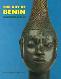

| |

Featured Book
The Art of Benin
The ancient kingdom of Benin is one of the most sophisticated in Africa, with a tradition of refined and beautiful representations... of kings and queens, relief plaques and staffs of office.

Paula Ben-Amos, The British Museum Press, 1995 ISBN: 0 7141 2520 2
Buy |
|
General
Learning about other cultures
- Berger, J. Ways of Seeing. B.B.C. & Penguin Books, 1972
- Evans, L. & Joynson, A. & Naidoo, B. Images of People. Russell Cotes Art Gallery and Museum, 1992
- Hall, S. (ed), Representation: Cultural Representations and Signifying Practices. Sage Publications with the Open University, 1997
- James, A. & Sfougaras, G. & Wheeler, R. Evaluating Artefacts. Centre for Multicultural Education, Leicester LE4 6RB, Museum Education
Leicestershire Museums Arts and Records Service, Leicester LEI 6TD
- Loeb, H. & Slight, S. & Stanley, N. (ed), Designs we live by. National Society for Education in Art & Design, 1993
Cultural diversity in Britain
- Bygott, D. Black and British. Oxford University Press, 1992
- Frow, M. Roots of the Future: Ethnic Diversity in the Making of Modern Britain. Commission for Racial Equality, 1996
- Adi, H. The History of the African and Caribbean Communities in Britain. Wayland,1995 (Useful 'Finding Out More' section,
also in books below)
- Adi, H. The History of the Asian Community in Britain. Wayland, 1995
- File, N. & Power, C. Black Settlers in Britain, 1555-1958. Heinemann, 1995
Also for books, other teaching resources and information
- The Development Education Association, 3rd Floor, Cowper Street, London EC2A 4AP
- Worldaware, 1 Catton Street, London WC1R 4AB
- Oxfam Education, 4, Bridge Place, London SWIV 1XY
- The Commonwealth Institute Resource Centre, Kensington High Street, London W8 6NQ
- for videos, active learning materials, maps, games, photo packs etc.
Books and Teaching Packs:
General Africa
Highly recommended
- Africa in the classroom, a Directory of Resources for Scottish Schools Produced as part of Scotland Africa, I997.
Available from Scottish Development Education Centre, Old Playhouse Close, Moray House Institute of Education, Holyrood Road, Edinburgh EH8 8AQ.
This book contains reviews of sources by teachers and those from the countries in Africa that are featured, and all resources have to meet ten
development education criteria. It also includes childrens' story books, teachers reference, organisations and addresses, and classroom resources
for primary and secondary classes
- Clarke, D. African Art. Bison Books Ltd, 1995
Key Stage 3+
- Jewell, R. African Designs. British Museum Press, 1994
- Museum of Mankind Education Service, What is African Art? British Museum Education Service, 1995
Resource Pack with poster available, free to schools visiting museum.
See also
- Barlay, N. Smashing Pots, Feats of Clay. British Museum Press, 1994, G.C.S.E.+
- Crafts Council, African Metalwork. Crafts Council, 1995
Catalogue to accompany exhibition of Autumn 1995, G.C.S.E +
- Philips, Tom (ed) Africa The Art of a Continent. Royal Academy of Arts, 1996
- Picton, J. & Mack, J. African Textiles. British Museum Press, 1989
- Quirke, S. and Spencer, A.J. The British Museum Book of Ancient Egypt. British Museum Press, 1992
- Willett, F. African Art. Thames and Hudson, revised 1993, G.C.S.E.+
For examples of contemporary art traditions in Africa:
Examples of Magdalene Odundo's work are in the Ethnography collections
- Berns, M. Ceramic Gestures, New vessels by Magdalene Odundo. University Art Museum, University of California, 1995
- Deliss C. (ed) Seven Stories about Modern Art in Africa. Whitechapel Art Gallery, 1995
- Magdalene Odundo. a catalogue published by Het Kruithuis, Stedelijk Museum voor Hedendaagse Kunst, s-Hertogenbosch,
Netherlands, 1994
- Magnin, A. Sullilan J. Contemporary Art in Africa. Thames and Hudson, 1996
Masquerade:
- Fischer, Eberhard & Himmelheber, Hans Dan: The Arts of the Dan in West Africa. Museum Reitberg, 1984
- Homberger, Lorenz (ed) Yoruba: Yoruba Art and Aesthetics. Centre for African Art (New York) and Museum Reitberg, 1991
- Mack, J. (ed) Masks, The Art of Expression. British Museum Press, 1994
- Phillips, Ruth E. Mende: Representing Woman, Sande Masquerades of Sierra Leone. University of California, 1995
General Masquerade
- Cole, Herbert (ed) I am Not Myself, The Art of African Masquerade. University of California, 1985
General African Art
- The James S. Coleman Studies Centre, A Journal of African Arts. University of California, 1997
Benin (Nigeria):
- Aafjes-Sinnadurai, U. The Kingdom of Benin: National Curriculum History, Key Stage 2. Commonwealth Institute, 1992
- Ben-Amos, P. The Art of Benin. British Museum Press, 1995 G.C.S.E+
- Midwinter C. Benin: An African Kingdom. W.W.F./4 Schools 1994 K.S.2
For young readers
Learning about other cultures
- Grinsell, A. Lets talk about racism. Watts/Gloucester Book, Aladdin, 1995
- Meredith, S. Why are people different? Starting Points Science, Usborne, 1993
K.S.1 / K.S.2
- Onyefulu, I. A is for Africa. Frances Lincoln, 1995
- Onyefulu, I. Emeka's Gift. Frances Lincoln, 1995
- Onyefulu, I. One Big Family. Frances Lincoln, 1996
K.S.2
- Freeman Ellis, V. Afro-bets, First Book about Africa. Just-Us Books, 1989 (available from Airlift Book Company)
K.S.2 +
- Ayo, Y. Eyewitness Guide: Africa. Dorling Kindersley, 1995
- Hart, G. Eyewitness Guide: Ancient Egypt. Dorling Kindersley, 1992
|
|


Ndop, wooden carving of King Shyaam aMbul aNgoong, Kuba-Bushoong The Democratic Republic of Congo (formerly Zaire), Probably late 18th century
|